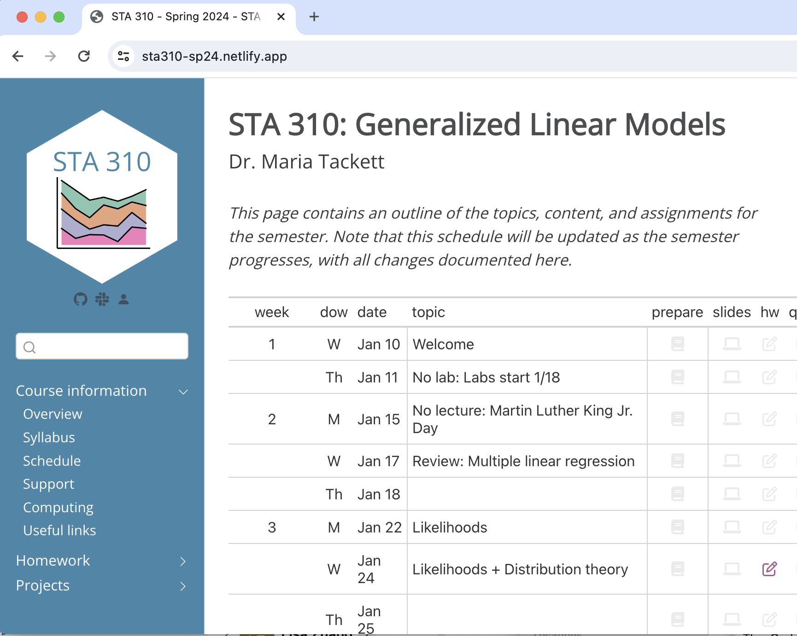

Welcome to STA 310!
Generalized Linear Models
Jan 10, 2024
Welcome!
Teaching Team
Teaching assistant
Hun Kang
PhD student in statistics
Course logistics
Lectures
Mondays and Wednesdays, 3:05 - 4:20pm, Physics 205
Labs
Lab 01: Thursdays, 3:05 - 4:20pm, Link #5
Lab 02: Thursdays, 4:45- 5:55pm, Link #5
Generalized Linear Models
In statistics, a generalized linear model (GLM) is a flexible generalization of ordinary linear regression. The GLM generalizes linear regression by allowing the linear model to be related to the response variable via a link function and by allowing the magnitude of the variance of each measurement to be a function of its predicted value.1
Example: Logistic regression
\[\begin{aligned}\pi = P(y = 1 | x) \hspace{2mm} &\Rightarrow \hspace{2mm} \text{Link function: } \log\big(\frac{\pi}{1-\pi}\big) \\ &\Rightarrow \log\big(\frac{\pi}{1-\pi}\big) = \beta_0 + \beta_1~x\end{aligned}\]
Course learning objectives
By the end of the semester, you will be able to …
- describe generalized linear models (GLMs) as a unified framework.
- explain how specific models fit into the GLM framework, including extensions for correlated data.
- identify the appropriate model given the data and analysis objective.
- analyze real-world data by fitting and interpreting GLMs.
- use R for analysis, Quarto to write reports, git for version control, and GitHub for collaboration.
- effectively communicate results from statistical analyses to a general audience in writing and oral presentations.
Course topics
Generalized Linear Models
- Introduce models for non-normal response variables
- Estimation, interpretation, and inference
- Mathematical details of GLMs as a unified framework
Modeling correlated data
Introduce multilevel models for correlated and longitudinal data
Estimation, interpretation, and inference
Mathematical details, particularly diving into covariance structures
Examples of GLMs in practice
Meet your classmates!
Meet your classmates!
Course details
Pre-reqs
Pre-reqs
STA 210 and STA 230 / STA 240
Background knowledge
Statistical methods
- Linear and logistic regression
- Statistical inference
- Basic understanding of random variables
Computing
- Using R for data analysis
- Writing reports using Quarto
- Version control and collaboration using GitHub
Course toolkit
Course toolkit
Canvas: canvas.duke.edu/courses/25310
- Announcements
- Gradebook
GitHub: github.com/sta310-sp24
- Homework and projects
Slack (link in Canvas)
- Class discussion forum
Class Meetings
Lectures
- Some traditional lecture
- Short individual and group activities
- Bring fully-charged laptop / tablet to use R
Labs (start January 18)
- Work on class assignments with TA support
- Work on projects with teammates
Readings

Primary textbook: Beyond Multiple Linear Regression by Roback and Legler
Other texts:
R for Data Science (2nd edition) by Wickham, Çetinkaya-Rundel, and Grolemund
Tidy Modeling with R by Kuhn and Silge
Articles and videos periodically assigned
Computing toolkit
R and RStudio
1️⃣ Install R and RStudio on your laptop
- Click here for instructions to install RStudio and configure git
or
2️⃣ Access RStudio through Docker container provided by Duke OIT
- Reserve a generic RStudio container (there is no course specific container)
GitHub
GitHub course organization: github.com/sta310-sp24
Will receive and submit assignments through a private GitHub repo in the course Github organization
Will receive assignment feedback as a GitHub issue. Final grades on each assignment will be available in Canvas
All work and feedback are private
Slack
Online discussion forum (like Piazza, Ed Discussion, etc.)
Platform to ask questions about course content, logistics, assignments, etc.
Content organized by channels. Before posting, please browse previous posts to see if your question has already been answered. If not, please post your question in the relevant channel.
Questions about grades, absences, and other private matters should be emailed to me with “STA 310” in the subject line.
Activities & Assessment
Homework (40%)
- 6 individual assignments
- Combination of conceptual questions, guided analyses, and open-ended analyses
- Will be submitted in your private GitHub repo
- Lowest homework grade is dropped
Quizzes (20%)
6 individual online quizzes
Covers content since the previous quiz, including readings, lecture notes, in-class activities, and homework
Lowest quiz grade is dropped
Projects
Project 01 (Team project, 10%)
- Team project to read and evaluate academic article that includes model for non-normal response variable
- Includes in-class presentation and short write up
Project 02 (Team project, 10%)
- Team project to evaluate article and conduct analysis focused on models for correlated data
- Includes in-class presentation and short write up
Final project (20%)
Individual project to apply what you’ve learned to analyze correlated data
Includes write up
Grading
Final grades will be calculated as follows
| Category | Percentage |
|---|---|
| Homework | 40% |
| Project 01 | 10% |
| Project 02 | 10% |
| Final project | 20% |
| Quizzes | 20% |
See syllabus for letter grade thresholds.
Course community
Course community
Uphold the Duke Community Standard:
- I will not lie, cheat, or steal in my academic endeavors;
- I will conduct myself honorably in all my endeavors;
- I will act if the Standard is compromised.
Commit to respect, honor, and celebrate our diverse community
Commit to being part of a learning environment that is welcoming and accessible to everyone
Accessibility
The Student Disability Access Office (SDAO) is available to ensure that students are able to engage with their courses and related assignments.
If you have documented accommodations from SDAO, please send the documentation as soon as possible.
I am committed to making all course activities and materials accessible. If any course component is not accessible to you in any way, please don’t hesitate to let me know.
Support
Office hours to meet with a member of the teaching team.
- Find the schedule in the syllabus and course webpage
- Office hours begin January 16
- Please email me if you’d like to meet before then
Slack for questions about course logistics, content, and assignments
Email for questions not appropriate for Slack, e.g., regarding personal matters or grades
- Please put STA 310 in the subject line
See the syllabus and support page for additional academic and mental health and wellness resources
Course policies
COVID-19 and other illness
Please do not come to class if you have tested positive for COVID-19, have possible symptoms and have not yet been tested, or have other illness.
Read and follow the university guidelines regarding COVID-19 at coronavirus.duke.edu.
Late work
Homework will be accepted up to 48 hours after the deadline. There will be a 5% deduction for each 24-hour period the assignment is late.
No late work is accepted on quizzes, and there are no makeups for missed quizzes.
Late policy for projects:
Presentation: Late presentations are not accepted and there are no make ups for missed presentations.
Write up: There will be a 5% deduction for write ups submitted late but the same day, a 10% deduction for write ups submitted the next day, and a 15% deduction for write ups submitted two days late (by 11:59pm). No credit given for write ups submitted more than 2 days after the deadline.
Peer evaluation: No late work is accepted on peer evaluations.
Academic integrity and collaboration
- The homework assignments must be completed individually and you are welcomed to discuss the assignment with classmates at a high level.
- You may not discuss or otherwise work with others on quizzes.
- For the projects collaboration within teams is not only allowed, but expected. Communication between teams at a high level is also allowed however you may not share code or components of the project across teams.
- Reusing code: Unless explicitly stated otherwise, you may make use of online resources (e.g. StackOverflow) for coding examples on assignments. If you directly use code from an outside source (or use it as inspiration), you must explicitly cite where you obtained the code.
Use of artificial intelligence (AI)
You should treat AI tools, such as ChatGPT, the same as other online resources.
There are two guiding principles that govern how you can use AI in this course:1
(1) Cognitive dimension: Working with AI should not reduce your ability to think clearly. We will practice using AI to facilitate—rather than hinder—learning.
(2) Ethical dimension: Students using AI should be transparent about their use and make sure it aligns with academic integrity.
Use of artificial intelligence (AI)
✅ AI tools for code: You may make use of the technology for coding examples on assignments; if you do so, you must explicitly cite where you obtained the code.
❌ No AI tools for narrative: Unless instructed otherwise, AI is not permitted for writing narrative on assignments.
Important
In general, you may use AI as a resource as you complete assignments but not to answer the exercises for you. You are ultimately responsible for the work you turn in; it should reflect your understanding of the course content.
Questions?
Set up course toolkit
See announcement on Canvas and complete the following:
- Sign up for Slack
- Complete STA 310 Student Survey
- Need to provide GitHub username. If you do not have a GitHub username, go to github.com to sign up and click here for advice on making a username.
Next Class
(Wednesday, January 17)
Understand statistical models
Review multiple linear regression
To do before next time
Install RStudio and configure git (or reserve container). See computing page for instructions.
- Will do application exercise next class
Read syllabus and let me know if you have any questions